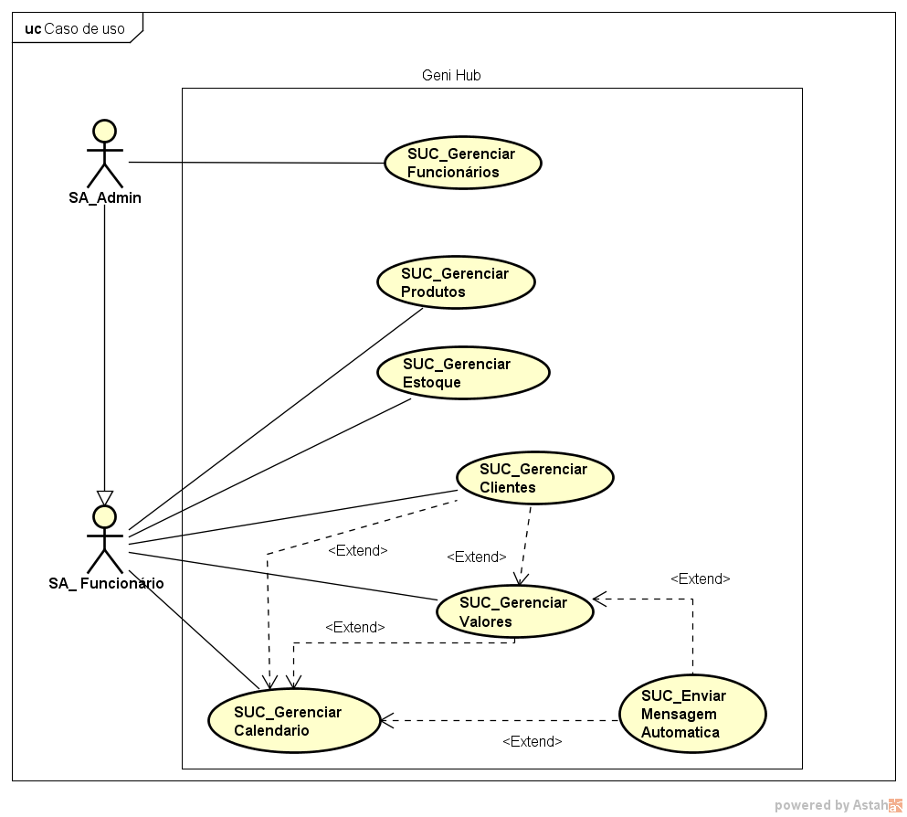
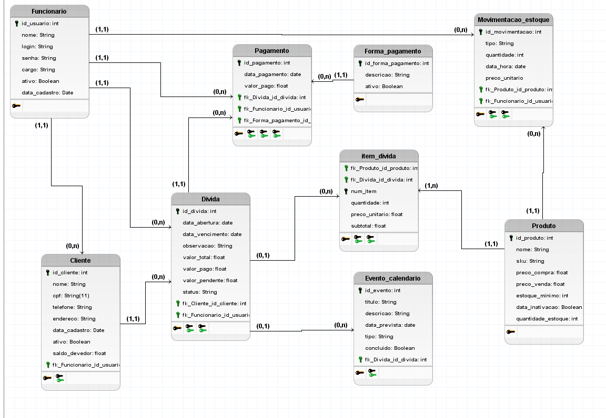
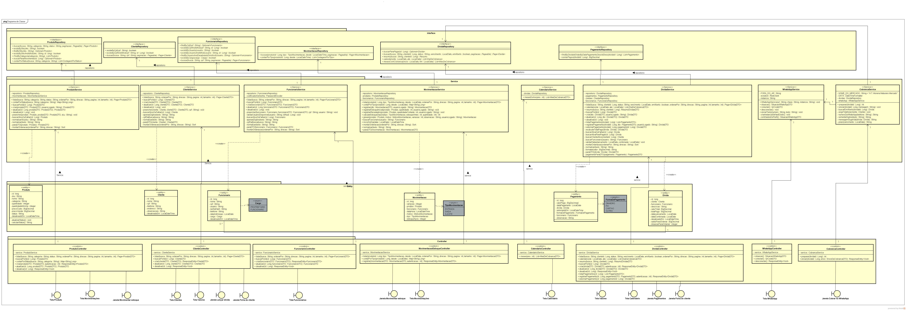
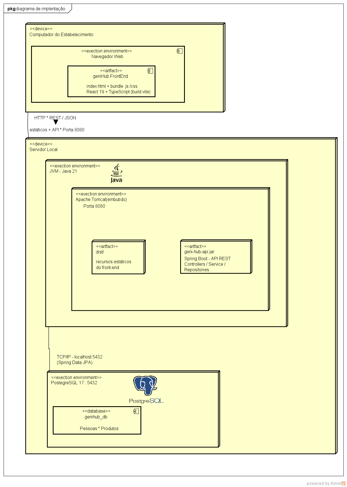
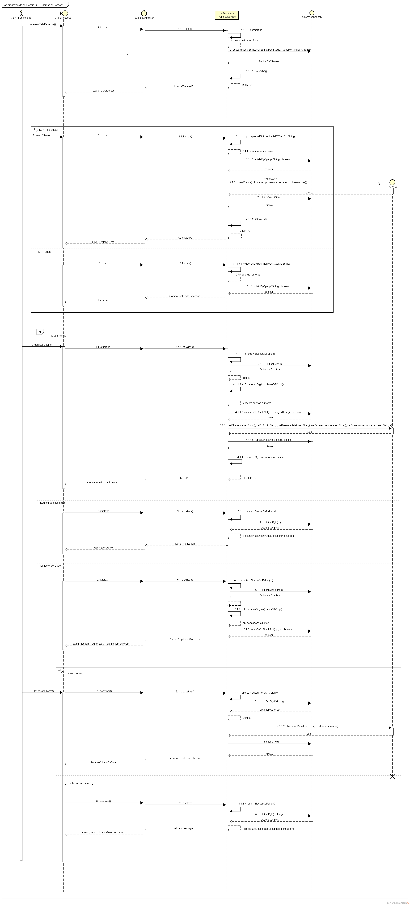
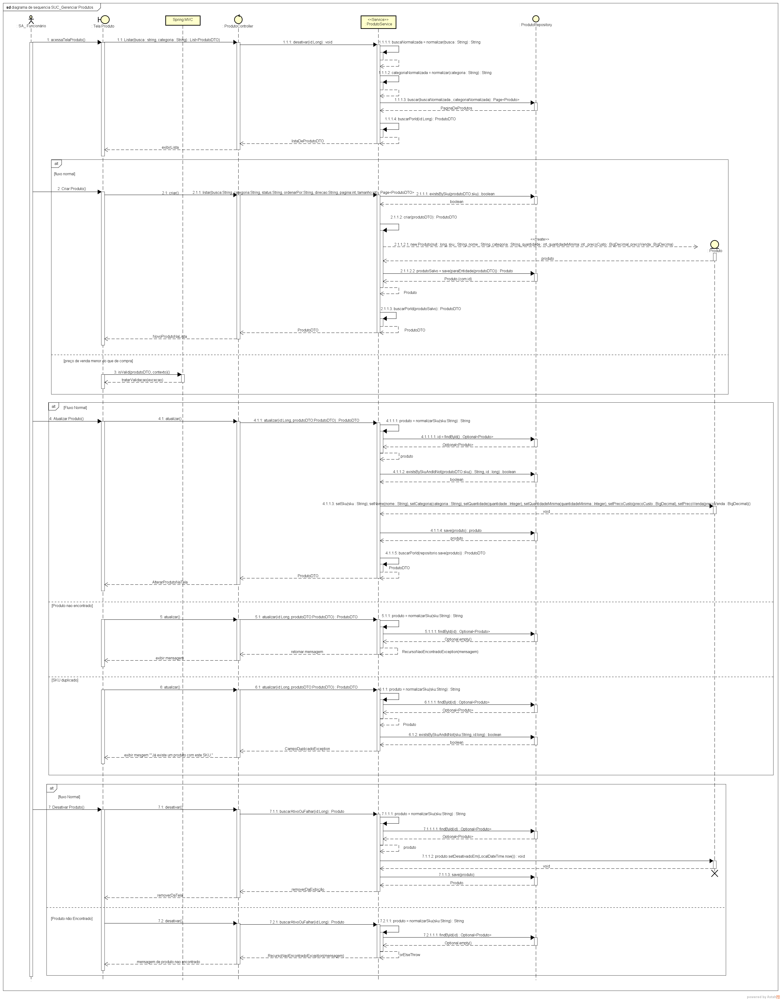
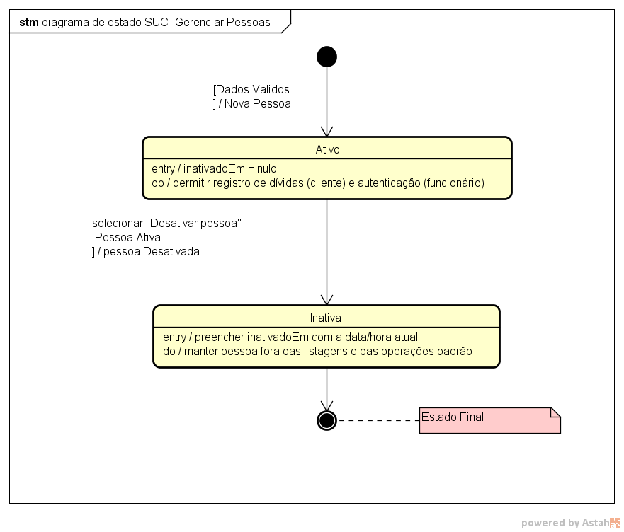
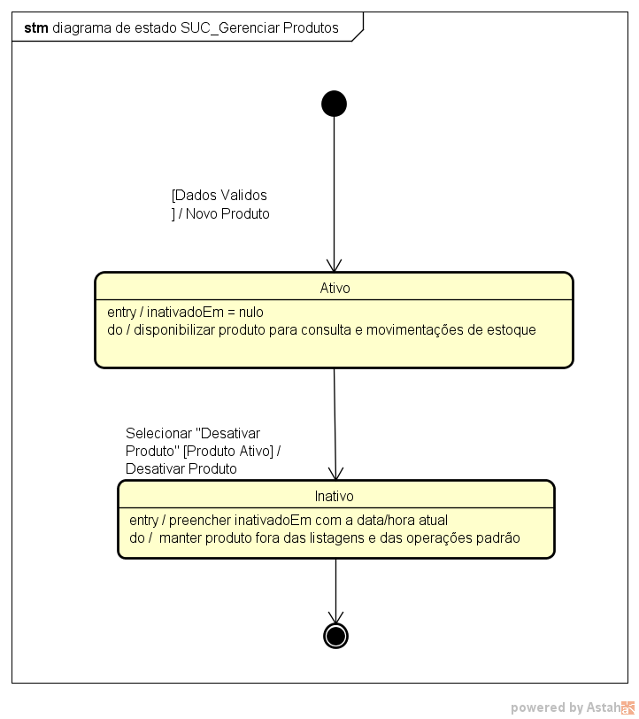

Proposta e objetivo
O Geni Hub é um sistema web de gestão comercial desenvolvido durante o estágio supervisionado para a A.T. Moreira Maturano, estabelecimento que atua como bar e mercearia e comercializa bebidas, materiais hidráulicos, produtos para pets e itens de varejo em geral.
Antes do sistema, todos os processos do estabelecimento eram manuais: não havia controle do estoque e as dívidas dos clientes eram anotadas em papel, sem data definida de pagamento.
O objetivo do projeto é permitir que o funcionário registre os produtos e acompanhe a quantidade disponível de cada um, e mantenha o saldo devedor de cada cliente atualizado e disponível no momento do atendimento.
Problema
Ausência de controle de estoque e registro de dívidas de clientes em papel, sem datas de pagamento definidas.
Tecnologias
- Java 17
- Spring Boot
- React 19
- Vite
- TypeScript
- React Router DOM
- PostgreSQL
Arquitetura
Aplicação web com front-end em React, back-end em Spring Boot e banco de dados PostgreSQL, utilizada pelo Funcionário e pelo Administrador, que também gerencia os funcionários.
Diagramas
1. Diagrama de caso de uso
Funcionalidades do sistema e a interação do Funcionário e do Administrador com cada uma delas.

Funcionalidades
- Suc_Gerenciar Funcionários — o administrador cadastra, edita e desativa os funcionários e define o usuário e a senha de acesso de cada um.
- Suc_Gerenciar Produtos — cadastro, edição e desativação de produtos, com código, categoria, quantidade mínima, preço de custo e preço de venda.
- Suc_Gerenciar Estoque — registro de entradas, saídas e ajustes de estoque, com histórico de quem fez cada movimentação e quando.
- Suc_Gerenciar Clientes — cadastro, edição e desativação de clientes, com acesso às dívidas de cada um.
- Suc_Gerenciar Valores — registro das dívidas dos clientes, com data combinada opcional, e dos pagamentos totais ou parciais, mantendo o saldo atualizado.
- Suc_Gerenciar Calendário — calendário com os pagamentos combinados de cada dia e o total a receber no mês.
- Suc_Enviar Mensagem Automática — envio de mensagem de cobrança pelo WhatsApp ao cliente com pagamento pendente ou em atraso, a partir de um texto padrão editável.
Cronograma
| Caso de uso | Status | Data |
|---|---|---|
| Suc_Gerenciar Funcionários | Concluído | 04/05/2026 |
| Suc_Gerenciar Produtos | Concluído | 11/05/2026 |
| Suc_Gerenciar Clientes | Concluído | 18/05/2026 |
| Suc_Gerenciar Estoque | Concluído | 04/08/2026 |
| Suc_Gerenciar Valores | Concluído | 11/08/2026 |
| Suc_Gerenciar Calendário | Concluído | 04/11/2026 |
| Suc_Enviar Mensagem Automática | Concluído | 11/11/2026 |
2. Entidade e relacionamento
Estrutura das tabelas do banco de dados e seus relacionamentos.

3. Classes
Classes do sistema, seus atributos, métodos e associações.

4. Implantação
Como o sistema é distribuído entre navegador, servidor e banco de dados.

6. Sequência
Troca de mensagens entre os componentes em cada funcionalidade.
Até o momento, estes são os únicos diagramas de sequência elaborados: Suc_Gerenciar Pessoas e Suc_Gerenciar Produtos.


7. Estado
Estados pelos quais os objetos do sistema passam e o que provoca cada mudança.


Telas do sistema
Demonstração em vídeo das telas do sistema em funcionamento.
Artefatos
Identificação
- Aluno
- Edduardo Maturano
- Matrícula
- 242041008
- Instituição
- UniFil — Centro Universitário Filadélfia
- Curso
- Bacharelado em Ciência da Computação
- Professor orientador
- Matheus Vinícius Pires da Silva Garvão
- Empresa
- A.T. Moreira Maturano